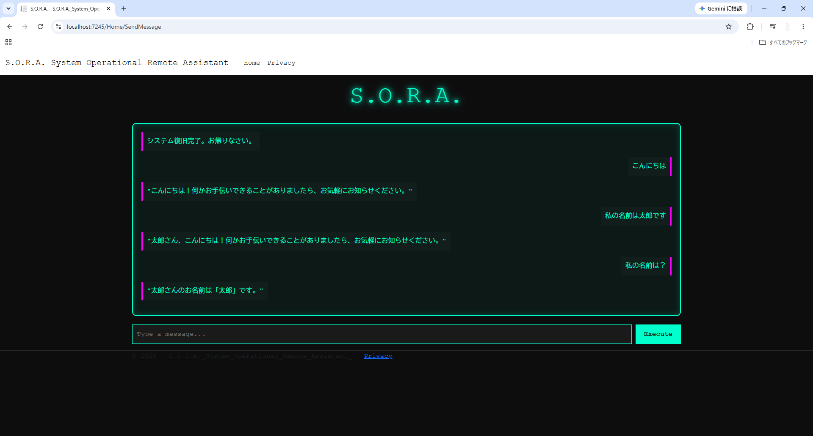

ローカルAIチャットWebアプリ
C#（ASP.NET Core）とPython（FastAPI）を組み合わせて開発したAIチャットアプリです。
Ollamaを使用し、外部へデータが流出しない完全ローカル環境でAIと対話できるシステムを構築しました。
概要
ローカルLLMを利用したAIアシスタントWebアプリケーションです。 Web検索や現在日時・天気情報の取得、計算機能などを組み合わせ、 ユーザーの質問内容に応じて適切な処理を実行できるシステムを開発しました。
開発のきっかけ
AIがWeb検索を活用して最新の情報を取得し、その内容を基に回答を生成するシステムに興味を持ったことが、本作品を制作したきっかけです。
ASP.NET Core（C#）とPython（FastAPI）、Ollamaを組み合わせ、ローカル環境で動作するAIアシスタントの開発に挑戦しました。
また、WebアプリケーションとAIを連携させるシステム構成や、API連携、プロンプト設計について理解を深めることも、本作品を制作した目的の一つです。
使用技術
| 技術 | 用途 |
|---|---|
| ASP.NET Core MVC | Web画面の構築、FastAPIとのAPI通信 |
| C# | サーバー側処理、HTTP通信、画面制御 |
| Python | AI処理、Web検索、天気情報取得、日時取得、計算処理の実装 |
| FastAPI | REST APIの構築、リクエスト処理、Ollamaとの連携 |
| Pydantic | APIリクエスト・レスポンスのデータ検証 |
| Ollama（Qwen3:8B） | ローカルLLMによる回答生成 |
開発環境
| OS | Windows 11 |
|---|---|
| IDE | Visual Studio 2022 |
| 言語 | C# / Python / JavaScript / HTML / CSS |
| フレームワーク | ASP.NET Core MVC / FastAPI |
| ライブラリ | Pydantic / DDGS / Requests |
| その他 | Ollama / GitHub / 生成AI（設計・実装支援） |
システム構成
ブラウザ
チャット画面
ユーザー入力
ASP.NET Core MVC（C#）
・画面表示
・FastAPIへのAPI呼び出し
FastAPI（Python）
・リクエスト受信
・質問内容を判定
・各機能へ振り分け
機能振り分け
・Web検索
・天気取得
・日時取得
・計算処理
・AI回答処理へ振り分け
Ollama（Qwen3:8B）
・ローカルLLMによる回答生成
ブラウザ
AIの回答を表示
機能一覧
- ローカルLLMとの対話
- Web検索結果を活用した回答生成
- 現在日時・曜日の取得
- 現在の天気情報の取得
- 四則演算の計算機能
- 質問内容に応じた処理の自動振り分け
- システムプロンプトによる応答制御
画面イメージ

工夫した点
- C#（Web制御・画面）とPython（AI処理）の役割を明確に分離し、それぞれの強みを活かしたシステム構成にした点
- 質問内容を判定し、Web検索・天気・日時・計算・AI回答の中から適切な処理を自動で選択する仕組みを実装しました。
- 画面から送信されたメッセージをFastAPIで受け取り、Ollamaが利用できる形式へ変換して回答を生成する処理を実装しました。